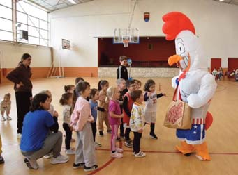
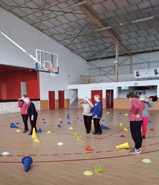
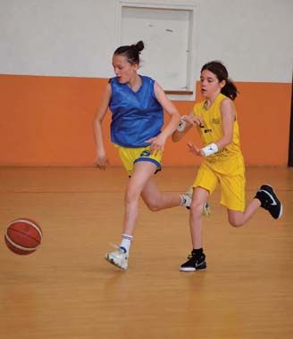
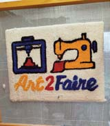

22 Associations ( ( ( Le plaisir, le respect de tous et l’esprit d’équipe sont venus rythmer la belle saison de nos joueurs, de nos entrai- neurs et de nos bénévoles. Chacun a porté �èrement les couleurs du club, que ce soit sur ou en dehors des ter- rains. Bravo à tous. Sur les terrains, toutes les équipes, grâce à un taux de présence impor- tant aux entrainements, ont pu pro- gresser au �l de la saison. Un grand merci à tous les entraineurs qui don- nent de leur temps. Nous avons pu compter cette année, pas moins de 15 équipes et 160 licenciés, ainsi que la pratique micro-basket et basket- santé. Hors des terrains, le club est toujours présent. Les tournois de septembre ont permis de lancer correctement la saison. Le traditionnel bal a eu lieu en Février cette année et a permis de ré- galer de nombreuses papilles. Nous avons également eu la joie de rece- voir cette saison, un stage de prépa- ration au tournoi inter-pôles où l’équipe du pôle Occitanie a pu dé- couvrir le village, ses structures et le camping du Faillal. Rendez-vous le 4 juillet pour la prochaine manifesta- tion du club, le marché gourmand. Un grand merci à la municipalité de Montpezat-de-Quercy, nos parte- naires privés, et les collectivités pu- bliques pour leur soutien au quotidien. Le Conseil d’administration du BCM. Basket Club Montpezatais Basket Club Montpezatais Art2faire est un espace de création, d’innovation et de partage à Montpezat-de-Quercy. Chaque mer- credi soir, nous vous accueillons dans la salle à l’ar- rière de la mairie. C’est l’occasion d’échanger sur vos projets dans une démarche “je le fais moi-même” ! Qu'il s’agisse d’un projet associatif ou personnel, vous pourrez notamment apprendre la modélisation 3D 4 Découvrir ce qui peut se faire à l’aide de nos im- primantes 3D 4 Apprendre à vous servir de notre découpeuse laser ou de notre plotter de découpe vinyle. Chaque mois, nous nous retrou- vons un samedi après-midi pour un atelier couture. Le fablab met à la disposition du groupe une ma- chine à coudre, une surjeteuse, une brodeuse nu- mérique et très bientôt, une presse à chaud ! Si vous avez envie d’apprendre à dompter ces ma- chines et de réaliser vos projets dans un esprit d’en- traide, n’hésitez pas à nous contacter pour en savoir plus. Notre mail : fablab.art2faire@gmail.com Art2faire